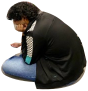
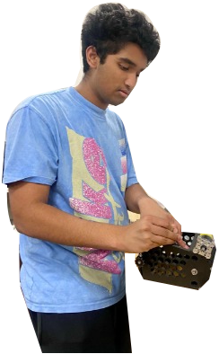
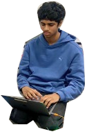

Meet the team
We’re FTC Team 31675 at the Islamic Center of Brushy Creek in Cedar Park, Texas.
Team fundraiserPractice photos
27 photos


Pit thoughts
It worked before everyone started watching.

Where did this extra screw come from?

Left wheel, your other left.

Rookie season
DECODE, 2025–26
We competed as ICBC-Qur’antum Mechanics in our first season.
- Sustain Award
- January 2026 · FiT-Central X-Stream League Tournament
- Compass Award
- March 2026 · FiT-Central Texas Regional Championship
- 3rd of 24 teams
- March 2026 · Regional championship, Aero Division qualifications